Single nuclei transcriptomics delineates complex immune and kidney cell interactions contributing to kidney allograft fibrosis
- The resolution of single-nuclei/ single-cell RNA-sequencing to individual cell types improves our understanding of the cell-specific pathways of injuries and allows for better disease subclassification.
- CAD(Chronic allograft dysfunction)은 Fibrosis와 Tubular atrophy(위축)이 특징이며, Kidney allograft loss로 이어진다. (= IF/TA) as a final common pathway for CAD
- 2개의 state로 Fibrosis를 나눔 → low and high extracellular matrix (ECM) with distinct kidney cell subclusters, immune cell types, and transcriptional profiles
- Imaging mass cytometry(protein)으로 ECM deposition 관측
- 2개의 state(High-ECM, low-ECM)은 다른 extracellular matrix deposition, tubular responses to injury, immune cell type proportion을 가진다
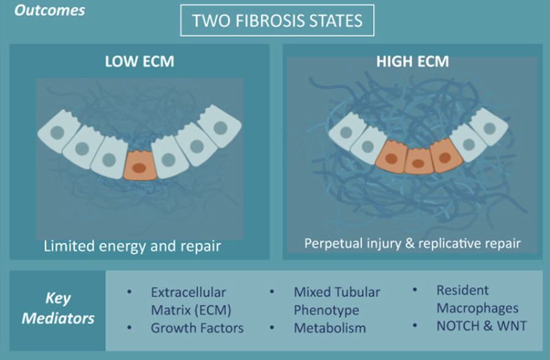
⛰️ Novel Finding
- Proximal tubular cells transitioned to an injured mixed tubular (MT1) phenotype comprised of activated fibroblasts and myofibroblast markers, generated provisional ECM which recruited inflammatory cells, and served as the main driver of fibrosis.
- MT1 in high ECM state → replicative repair
- showing dedifferentiation and nephrogenic transcriptional signatures
- Activated B, T and plasma cells were increased in the high ECM state
- MT1 in low ECM state → limiting the potential for repair
- showing decreased apoptosis, decreased cycling tubular cells, and severe metabolic dysfunction
- macrophage subtypes were increased in the low ECM state
- CCI
- Intercellular communication between kidney parenchymal cells and donor-derived macrophages, detected several years post-transplantation, played a key role in injury propagation.
- Ligand receptor analyses revealed dynamic immune and nonimmune interactions driven by infiltrating and resident macrophages
- Trajectory
- Trajectory- based pseudotime inferences indicated a proximal tubular– to-fibroblast phenotypic transition (with a mixed tubular intermediate state) in fibrotic grafts
⇒ MT1 is an intermediate transcriptional state in the epithelial-to- mesenchymal transition
Fibrosis state(High-ECM/Low-ECM)
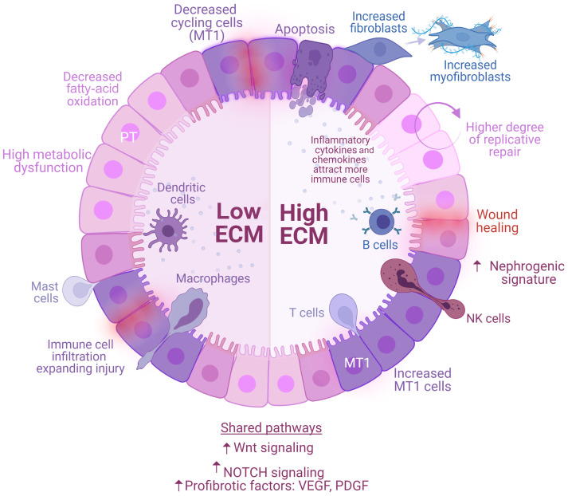
- High-ECM:
- FN1, COL1A1, and VCAN were differentially expressed in the high-ECM
(protein 수준에서 확인했을 때 이러한 protein이 normal < low-ECM state < high-ECM state으로 증가하는 것을 확인)
- GO analysis시 High-ECM에서 inflammatory responses up-regulated + Immune cell들도 더 많이 나타남
- PT 감소량이 High-ECM에서 가장 크다
- Endothelial cell subcluster인 EC2(EHD3)가 highECM에서 가장 크게 나타남
- ECM이 높은 상태에서는 세포가 증식할 수 있는 능력이 향상되어 신장이 휴면 상태에서 빠져나와 다시 기능을 회복할 가능성이 있다
- FN1, COL1A1, and VCAN were differentially expressed in the high-ECM
- 전체 Fibrosis(High+Low ECM)
- Fibroblast subtype인 FB1 (PDGFR-a)이 증가함
- cell morphogenesis, wound healing, and epithelial cell differentiation 나타남
- Mixed Tubular(MT) cluster가 Fibrosis에서 두드러지게 나타남
- Tubular cluster에서 KCNIP4가 up-regulated 되었는데 proinflammatory, profibrotic state that per- sists after acute kidney injury.25 와 연관이 있다
Proximal Tubule Cells
- Healthy PT cells rely primarily on fatty acid oxidation as their energy source.44
- Fibrosis state에서 fatty acid oxidation이 downregulate되고 이게 IFTA에 기여한다
- “These findings support that PT cells undergo a PT “renal hibernation”42”
- Physiological한 pathway는 두 Fibrosis에서 모두 downregulated 되었다
- supporting PT metabolic dysfunction
- Lipid and fatty acid metabolism alterations were more sig- nificant in the low-ECM state
- supporting PT metabolic dysfunction
Mixed PT
- MT1-2가 previous murin AKI study의 “mixed identities” cluster와 유사하다
- MT1 coex- pressed PT (LRP, CUBN) and injury (HAVCR1, VCAM1)25 markers (Figure 3d).
- MT1 in the high-ECM state expressed a higher level of injury markers
- MT1 expressed profibrotic growth factors (VEGF, PDGF) and injury markers (HAVCR1, VCAM1), as reported in acute kidney injury.21,25–27,46,47
- MT1 population was evaluated for replication- or impaired reparation–specific markers
- Cell cycle arrest(중지) has been associated with kidney injury and plays an important role in tubular cell protection and maladaptive repair(부적응적 회복). 25,27-29
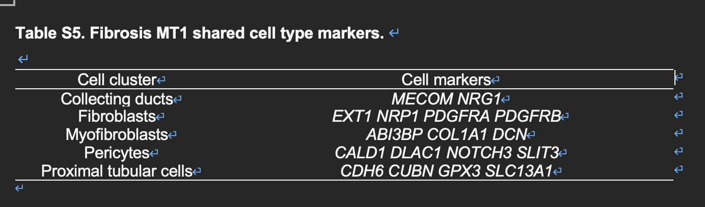
Cell cycle 관련
- in the low-ECM state, expression of G2M cell cycle regulators was decreased, compared to that in the high-ECM and normal states
- These cells had decreased expression of G2/M regulators, leading to inhibition of apoptosis and necrosis.
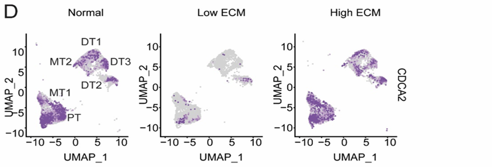
- DEG analysis →
- MT1 over- expressed genes enriched in the actin filament-based process, cell morphogenesis, receptor tyrosine kinases, and vascular endothelial growth factor (VEGF) signaling
- The high-ECM state was characterized by a strong signature of cell morphogenesis, leukocyte differentiation, and Wnt (wingless related integration site) signaling
- low-ECM state was marked by negative regulation of cell proliferation and apoptosis
- senescence-gene signature(세포 노화(senescence)는 세포가 더 이상 분열하지 않고 영구적으로 휴지 상태에 머무는 현상) was shown in the high-ECM state, compared to the low-ECM state
- MT1에서 amino acid degradation and small molecule transport가 down-regulated되었으며, T-cell activation and differentiation가 high-ECM에서 enriched됨
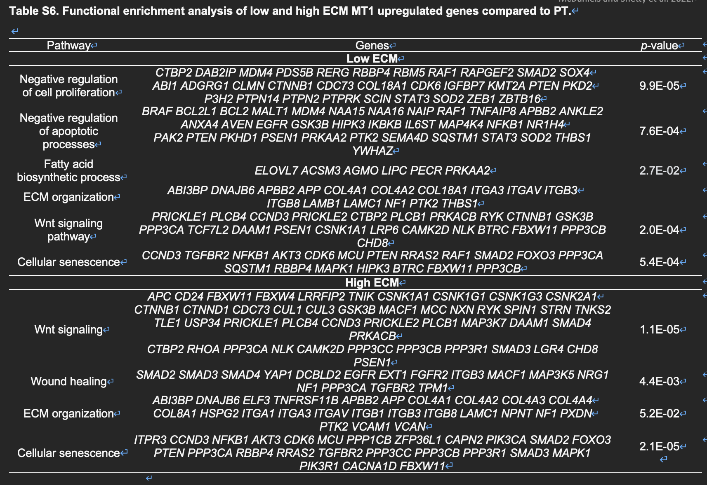
📌 Our results demonstrate that PT cells in the kidney graft are responsible for initiating the reparation process in response to injury
One critical characteristic of normal tissue repair is controlled apoptosis of inflammatory cells and myofibroblasts that attenuates and/or terminates the healing process.43
Trajectory Analysis
- 결론적으로는 confirmed MT1 epithelial origin했다
- PT to MT1 to an FB-like state
- PT Marker(CUBN) 줄어드는 반면 FB Marker(C7)은 증가 as cells moved toward the MT1 transition signature
- collagens, integrins, platelet-derived growth factor receptor (PDGFR), and other growth factors perpetuating MT1 transformation, immune cell recruitment, and active production of ECM
- indicating positive feedback loop of fibroblast activation
- The final FB1 cluster, unique to fibrosis states, was enriched in myofibroblast markers (COL1A1, FN1, VCAN, and PDGFR-a/-b).
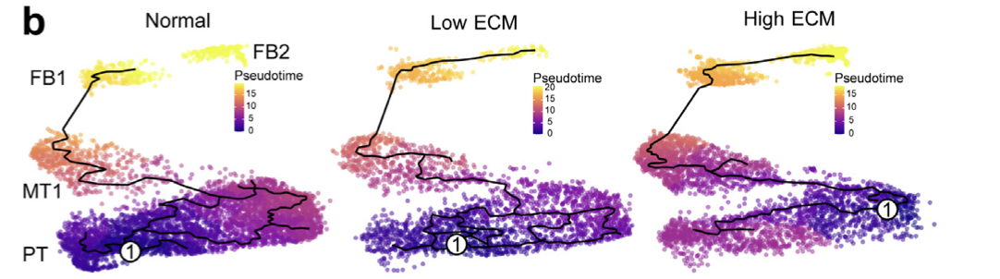
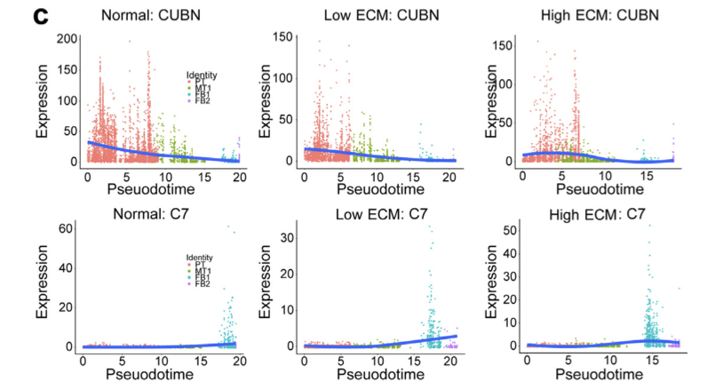
⇒ MT1 is an intermediate transcriptional state in the epithelial-to- mesenchymal transition!
- EMT가 활성화되면 이식된 장기 내의 상피 세포가 간엽 세포로 변환되어 **섬유화(fibrosis)**를 유발
- 이식 장기에서 만성 거부 반응을 촉진하는 역할
The final FB1 cluster, unique to fibrosis states, was enriched in myofibroblast markers (COL1A1, FN1, VCAN, and PDGFR-a/-b).
- injured MT1 population → replication or impaired reparation-specific marekers
- Co-upregulation of a prolifera- tion marker (MKI67) and an apoptotic marker (CASP3) in high-ECM MT1 showed a subset of injured PT cells that underwent injury-induced replication
- MT1 in the high-ECM state was also characterized by reduced SLC34A1 expression, compared to that in the low-ECM and normal states, indi- cating dedifferentiation of injured PT cells.
- nephrogenic signature26 normally expressed during early kidney development was associated with the high-ECM state(as evidenced by high SOX4 and CD24 expression )
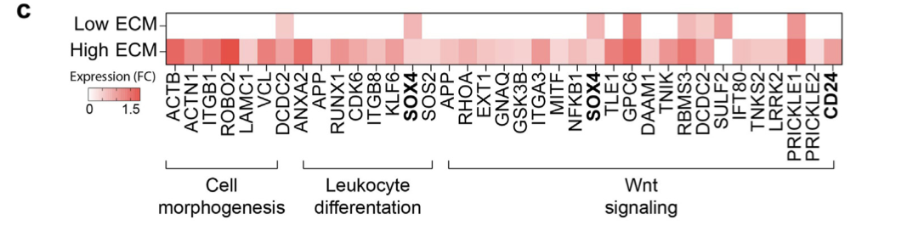
- MT2 cells were not as abundant as MT1 and were present mainly in normal allografts
- For normal grafts, cell trajectories ended at the FB1 cluster, whereas fibrotic graft trajectories extended to the FB2 cluster
Fibroblasts sub-type
- FB1, FB2
- FB1
- FB1 was more abundant in fibrotic kidneys(markers : PDGFR-a and COL1A1)
- FB1 enriched in myofibroblast markers (COL1A1, COL3A1, COL5A1, COL5A2, COL6A3, COL8A1, FBN1).
- GO analysis
- High-ECM : ECM orga- nization, smooth muscle contraction, and wound healing
- Low-ECM : cell junction, focal adhesion, and vascular endothelial growth factor signaling pathways
- FB2
- predominant in the high-ECM state (markers: PDGFR-b)
- enriched in pericyte markers (PDGFR-b, CALD1, COL4A2, NOTCH3).
- FB1
- Trajectory
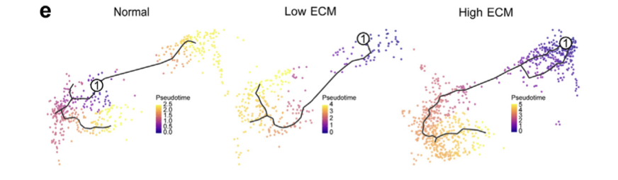
Immune cell landscape (Normal vs Low-ECM vs High-ECM)
- Critically, low- and high-ECM states were characterized by distinct immune cell landscapes.
- Myeloid-derived immune cells were increased in the low-ECM state, whereas B, T, and plasma cells were increased in the high-ECM state. However, immune cells were transcriptionally more active in the high-ECM state.
- B memory cells are characterized by pro- duction of inflammatory cytokines and chemokines that attract more macrophages, natural killer, and inflammatory cells,48,49 → observed in the high-ECM state
- Th17 up-regulation이 B cell expansion의 evidence가된다(pathway analysis)
- Antigen-driven activation of B memory cells results in their rapid proliferation and dif- ferentiation into plasma cells that produce large amounts of higher-affinity antibodies,48,49 explaining the higher popula- tion of plasma cells in the high-ECM state.
- B-cell activity is strongly associated with maladaptive kidney repair and immune-mediated injury hypothesized to drive the adaptive immune response.55
- Tregs assist in repair and prevent inflammation by modulating macrophage phenotype and function.51–54
- Our data complement this finding by showing that the nephrogenic, high-ECM state has a 5-fold increase in Tregs relative to the low-ECM state.
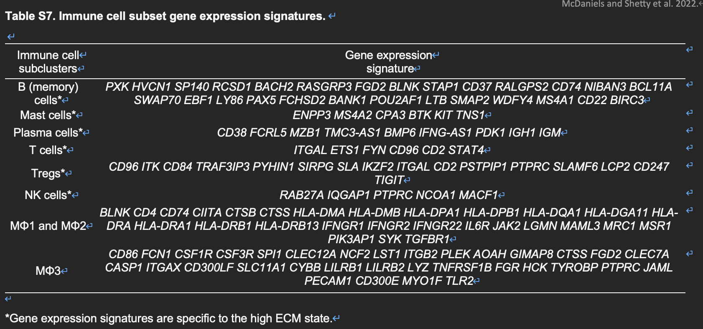
- The low-ECM grafts had the highest myeloid cell proportions containing diverse macro- phages (MF1, MF2), classical and plasmacytoid dendritic cells, and mast cells
- The high-ECM grafts had the highest proportions of B, plasma, T, and Treg cells
- For high-ECM grafts, the combined panel showed an increased abundance of T and B cells, located in close proximity to the endothelium and to each other(여기서 imaging mass cytometry staining으로 spatial한 분석)
- The T-cell cluster in the high-ECM grafts was enriched in DEGs associated with B- and T-cell activation, nuclear factor kappa B (NF-kB) signaling, T-cell receptor (TCR) signaling, and T helper type (Th)17 cell differentiation, which matched its increased activity enriched in the MT1 cluster
Macrophage sub-type
- tissue-resident macrophages are found to be abundant in healthy kidneys.50
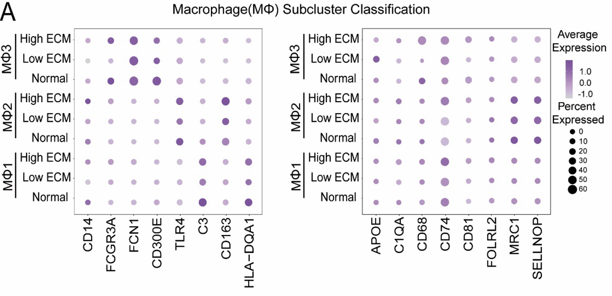
- Mac1 : upregulation of antigen processing and presentation, human leukocyte antigen (HLA) class II genes, and Th1/ Th2/Th17 cell differentiation
- Mac2(markers : STAB1, F13A1, CD163, and NRP1): major histocompatibility complex (MHC) class II–mediated antigen presentation and macrophage M2-related phagocytosis
- 전체적인 Fibrosis상태에서 Mac2가 cell adhesion, endocytosis regulation과 관련되어 있었으며, high-ECM에서는 interferon-a and interferon- g responses가 두드러짐
📌 MF1-2 also over- expressed CD74 in high-ECM kidney grafts, recently described together with C1QA, CD81, and APOE as a po- tential marker of resident macrophages across species33
- low-ECM state에서 Mac1, Mac2 비율 높음
⇒ 지속적인 손상(sustained injury)**이 **세뇨관 재생(tubular regeneration)**을 방해하고, **활성화된 대식세포(activated macrophages)**가 **국소 조직 손상(local tissue injury)**에 반응하여 염증 반응을 유발하면서 적대적인 환경을 조성하고, 결과적으로 전반적으로 **치유 실패 상태(failed repair state)**를 초래
- Mac3 (markers: CD86, FCN1, and CSFR1)
Dendritic cells sub-type
- BTLA, ITGAX, NRP1, and IRF7
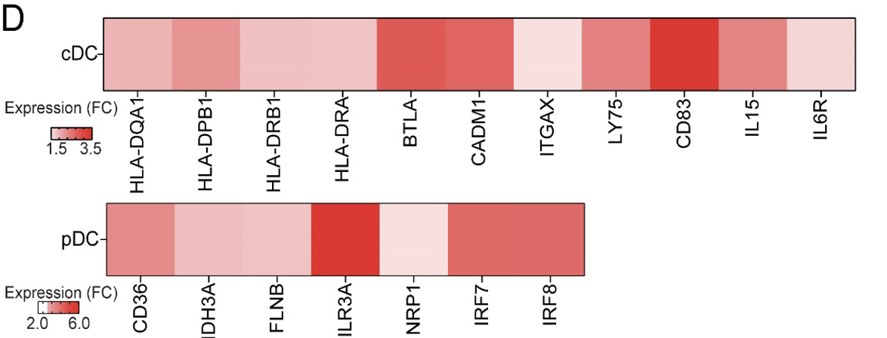
CCI
- LR analyses showed that these resident macrophages were strongly associated with a proinflammatory environment, likely activating myofibroblasts and perpetuating injury and/or impaired repair
- A major factor driving kidney injury versus tissue resto- ration is the activation state of macrophages within local tissues rather than the degree of monocyte infiltration.59–62
- MF1 was characterized by overexpression of genes regulating B-cell proliferation, lymphocyte activation, and interleukin 2 production
- → increased leukocyte transendothelial migration in the high-ECM state
📌 Donor-Recipient specific immune cell population을 Donor/Recipient Sex에 따라 구분해보았을 때providing supporting evidence that resident macrophages play an important role in mediating, and exacerbating, immune-mediated inflamma- tion in kidney grafts
📌 Discussion
- A limitation of our study is its cross-sectional design. Despite careful matching of normal and fibrosis states, the cross-sectional design precludes longitudinal evaluation of dynamic mechanisms leading to IFTA. Future studies are needed to examine the sequential events that are associated with the onset, propagation, and resolution of injury.
🔨 Method 기록
- KEGG pathway enrichment analysis → Metascape 사용https://metascape.org/gp/index.html#/main/step1
To do
- checking→ We provide a web-accessible database that delineates cellular path- ways driving beneficial or deleterious tissue repair after chronic injury
- CellMarker database사용해서 Cell type annotation
- Loop of Henle cell markers were identified (UMOD). Following recommendations,18 Loop of Henle cells were denoted as “Unknown 1” (UKN1). → 이거 뭔말인지 확인
- Tubular cluster에서 KCNIP4가 up-regulated 되었는데 proinflammatory, profibrotic state that persists after acute kidney injury.25 와 연관이 있다 → reference 읽어보기
- Cell cycle phase 구분 어떻게 했는지?
- Cell cycle regulator marker gene으로 본듯
- Normal graft expression of injury and normal PT markers is likely a consequence of ongoing subclinical immune responses and chronic exposure to calcineurin inhibitors.?
- As PT cells regenerate after injury,30 the injured MT1 population was evaluated for replication- or impaired reparation–specific markers.?
- pathway-associated genes included regulation of B-cell activation, leukocyte chemotaxis, endo- cytosis, and nuclear factor kappa B and FC receptor–mediated stimulatory signaling pathways. Plasma cells in the high-ECM grafts had an active transcriptional profile, although the bi- opsies lacked histologic evidence for antibody-mediated rejection ?
- In response to injury, provisional ECM (cross-linked fibrin,fibronectin,fibrinogen, proteoglycans) serves as a migration scaffold for inflammatory, fibroblastic, and vascular cells to enter and repopulate sites of injury.41?
- PT and MT1 cells in the high-ECM state were character- ized by their genes associated with transendothelial cell migration and T-cell activation.
- The low-ECM state activated a less-regulated immune response via expression of ABCA1, ADAM10, AXL, CALM1/2, ERBB2, F2R, GNAI2, HSPG2, LGR4, LRP1/5, MAPK1, and TNFSF10 based on the Innatedb.63